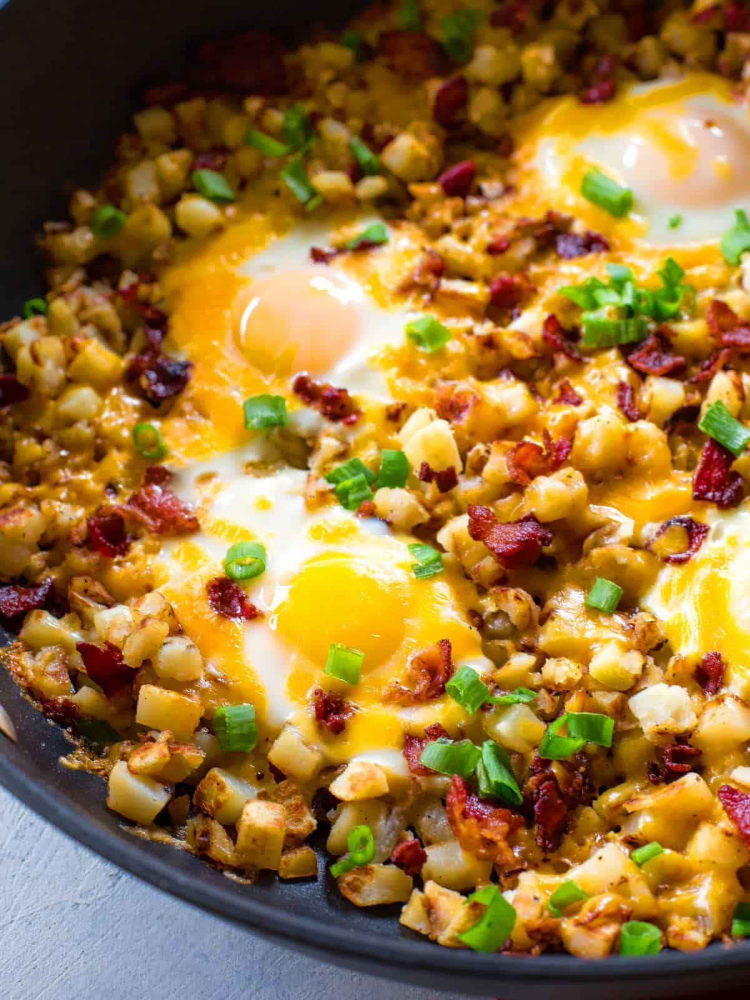

Hash breakfast!

Description
This easy to make breakfast is a great way to get your day started
with all of your needed nutrients to get you going!
Ingredients
- One Potato
- 3 Eggs
- Bacon
- Spinach
- One Onion
Recipe
- cut potato into 1/4 inch cubes
- Dice onion
- dice spinach leaves
- put cut ingredients in a bowl and to the side
- heat pan to medium and put three slices of bacon of choice in
cook until crispy
- Take bacon out, if using pork bacon instantly put cut ingredients into pan,
if not put a tablespoon of oil in and then ingredients
- cut up bacon and put into pan as well
- once potatos are crisp and golden add salt and pepper
- add eggs and stir!
- once cooked through take off heat and add seasoning to your liking
- enjoy!